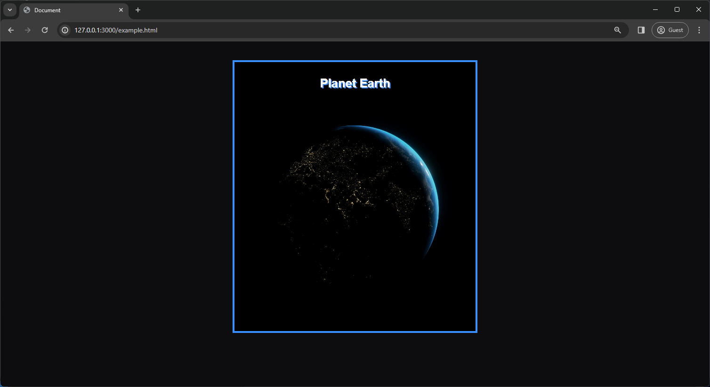

Like HTML, CSS (Cascading Style Sheets) is not a programming language. It's not a markup language either. CSS is a style sheet language. CSS is what you use to selectively style HTML elements. For example, this CSS selects paragraph text, setting the color to red:
It's the code that styles web content. This article walks you through what you need to get started.
We'll cover topics like: Making content display in certain parts of your webpage, Decorating your
webpages with background images & colors and much more! To get started, you'll need to create a
styles.css file which you can find out how to do
here.
The whole structure is called a ruleset. (The term ruleset is often referred to as just rule.). A ruleset's main parts are as follows:
-
Selector:
This is name of the HTML you want to target and apply styles to (in this example,
p p -
Declaration:
This is a single rule like
color: red;. It specifies which of the element's properties you want to style / change.color :red ; -
Properties:
These are the the specifications of the properties you want to style. (in this example,
coloris a property of thep color : -
Property Values:
To the right of the property — after the color — there is the property value. This chooses one out of many possible appearances for a given property. (For example, there are many
colorvalues in addition tored.)red orange yellow green blue indigo violet etc...
To modify multiple element properties in one ruleset, we can write them separated by semicolons, like so:
p
color : violet ;
font-size : 20px
border : 2px solid black ;
In case you were wondering, you can also select multiple elements and apply a single ruleset to all of them. You separate multiple selectors with commas. For example:
p,
li,
h2
color : orange ;
There are many different ways to select elements. The examples above use
element selectors, which select all elements of a given type. But we can make more specific selections as well. Here
are some of the more common types of selectors.
-
Element Selector
The Element Selector (Type Selector) selects all HTML elements of a specified type.
Example:
CSS Selector span Selects All Elements Of Same Type span Selectedspan span Selectedspan span Selectedspan -
ID Selector
The ID Selector selects one element on your page with the specified ID.
Example:
CSS Selector #title Selects the ONE element with the specified ID h1 Selectedid title h1 h2 Not Selectedid title h2 All declared IDs in your HTML MUST be unique. There can never be two elements with the same ID.
-
Class Selector
The Class Selector selects all element on your page with the specified class.
Example:
CSS Selector .link Selects all elements with the specified Class a Selectedhref twitter.com class link a a Selectedhref instagram.com class link a a Selectedhref facebook.com class link a Unlike IDs, you can have as many elements with the same class-name as your heart desires.
-
Attribute Selector
The Attribute Selector selects all element on your page with the specified attribute.
Example:
CSS Selector img src Selects all elements with the specified attribute img src GrumpyDonkey.png Selected img src GrumpyHorse.png Selected
If you want to take it a step further, you can select elements with a specific attribute value like so:
img src GrumpyHorse.png img src GrumpyHorse.png Selected -
Pseudo-Class Selector
The Pseudo-Class Selector selects the specified element(s), but only when in the specified state. For example when a cursor
hoversover a link.
Example:
CSS Selector a:hover Hover CSS Selects all specified elements, but only when a mouse pointer is hovering over the link a Githubhref github.io a
Something you're bound to notice at some point is that: a lot of CSS is about boxes. Most HTML elements on your page can be thought of as boxes sitting on top of other boxes, or boxes within a box that's within another box that's contained by another- you get the point.
CSS layout is mostly based on the glorious box model. Each box taking up space on your page has properties like:
-
padding— the space around the content. In the example bellow, it is the space around the paragraph text. border— the solid line that is just outside the padding.-
padding— the space around the content outside of the border.
In this section we also use:
width(of an element)-
background-color— The color behind an element's content and padding. color— The Color of an element's content (usually text)-
text-shadow— Sets a drop shadow on the text inside an element. -
display— Sets the display mode of an element. (we'll talk about that more here)
In this section, you'll learn basic ways to style a document. The below is some HTML to get you started. Be sure to learn How To Create & Link Files.
HTML
DOCTYPE html
html
head
meta charset UTF-8
meta name viewport content width=device-width, initial-scale=1.0
title Documenttitle
link rel stylesheet href styles.css
head
body
h1 The Great Lakeh1
img scr https://unsplash.com/photos/snow-covered-mountain-near-body-of-water-during-daytime-fvJwchRL6xw
body
html
Make sure to like your document to the correct name of your .css file. You can learn how to link and create your files Here.
Right off the bat, without any styling, the website looks like a mess.
CSS
html
background-color : #0d0d10 ;
The following rule sets the background color of your entire page.
CSS
body
width : 600px ;
margin : 0 auto ;
padding : 0 20px 20px 20px ;
background-color : black ;
border : 5px solid dodgerblue ;
font-family : sans-serif
In this example, there are several different declarations for the
-
width: 600px;— This forces the body to always be 600 pixels wide. -
margin: 0 auto;— When give a property likemarginorpaddingtwo values, the first value affects the element's top and bottom sides (settings it to0in this case); while the second value affects the left and right sides. Here,autois a special value that divides the available horizontal space evenly between left and right. -
padding: 0 20px 20px 20px;— This rule sets for values for the body's padding. The goal is to put some space around the content. In this example, there is no padding at the top of the body, 20 pixels on the right, bottom, and left. The padding values set top, right, bottom, left in that order. -
background-color: black;— This sets the element's background color which, in this example, we set toblack. However, you can change this to what ever you like. -
border: 5px solid dodgerblue;— This sets values for the width, style and color of the border. In this case, it's a five-pixel-wide, solid dodgerblue border, on all sides of the body. font-family: sans-serif
— Sets the font-family of the text to "sans-serif" which is a very common font used in browsers.
CSS
h1
margin : 0 ;
padding : 20px 0 ;
color : black ;
text-shadow : 3px 3px 1px dodgerblue ;
text-align : center ;
In this example, we'll change the rather ugly default gap that browsers apply to the
margin: 0;.
Next, we set the heading's top and bottom padding to 20 pixels. (
padding: 20px 0; )
Following that, we can set the title to be white to better contrast with the background.
Then, we'll add a text-shadow which, as the name implies, applies a
shadow to the text content of the element. It has four definable values:
- The first pixel value sets the horizontal offset of the shadow from the text: how far it moves across.
- The second pixel value sets the vertical offset of the shadow from the text: how far it moves down.
- The third pixel value sets the blur radius of the shadow. A larger value produces a more fuzzy-looking shadow.
- The fourth and last value sets the color of the shadow (in this case dodgerblue).
Finally, we'll center the text using text-align: center;
Try experimenting with different values to see how it changes in appearance.
One of the most common things you'll be doing CSS & HTML is centering elements. This section teaches
you one of basic, out of numerous, ways to center an image. We could use the
margin: 0 auto; trick again as we did for the body. But there are
differences that require an additional setting to make the CSS work.
The display: block;.
However, it's important to note that if the element, or in this case image, you use is larger than the
width set on the body (600 pixels) or parent element of your image, it will overflow the body,
spilling into the rest of the page. To fix this, you can either: reduce the image width using a
graphics editor or; use CSS to size the image by setting the
width property on your
img take up 100% of the body's width.
CSS
img
display : block ;
margin : 0 auto ;
width : 100%
If your were able to follow along and complete the steps, you should have a page that looks like this:
Go ahead and give yourself a pat on the back. 🎉